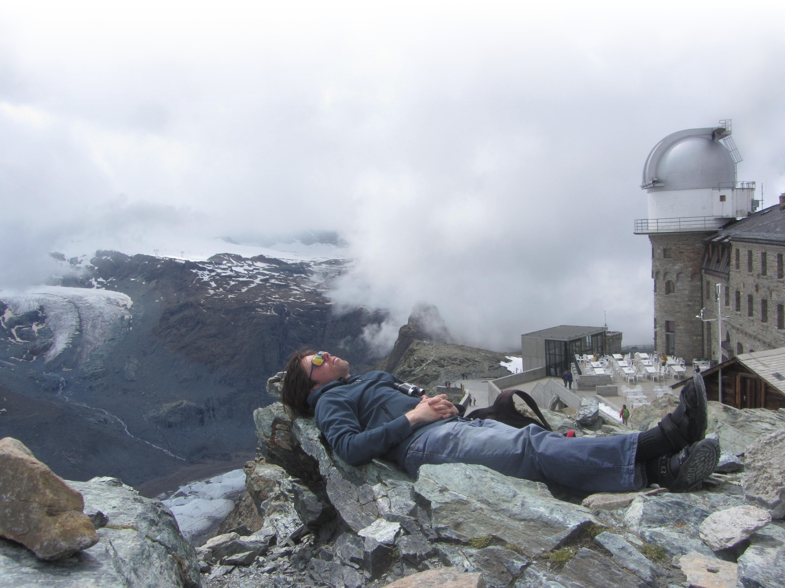

My
arXiv page.
My
ORCID page.
•
De Jong, S.
Balancing physical modeling and musical requirements:
Algorithmically simulating the calls of Hyalessa Maculaticollis for real-time instrumental control.
In
Proc. SMC 2024,
https://doi.org/10.5281/zenodo.14362425 .
•
De Jong, S, Van der Veer, G. Computational techniques enabling the perception of virtual images exclusive to the retinal afterimage.
Big Data Cogn. Comput. 2022, 6, 97,
https://doi.org/10.3390/bdcc6030097 .
•
De Jong, S. Human noise at the fingertip: Positional (non)control under varying haptic × musical conditions.
In
Proc. NIME 2021,
https://doi.org/10.21428/92fbeb44.9765f11d .
•
De Jong, S. Ghostfinger: a novel platform for fully computational fingertip controllers.
In
Proc. NIME17, 2017, 387-392,
https://doi.org/10.5281/zenodo.1176292 .
•
De Jong, S.
Computed fingertip touch for the instrumental control of musical sound with an excursion on the computed retinal afterimage.
Ph.D. thesis, 2015 (Universiteit Leiden, Leiden, The Netherlands),
https://hdl.handle.net/1887/36343 .
•
De Jong, S. Making grains tangible: microtouch for microsound. In
Proc. NIME11,
2011, 326-328,
https://doi.org/10.5281/zenodo.1178055 .
•
De Jong, S. The Cyclotactor.
Best Demonstration Award,
EuroHaptics 2010
international conference (Amsterdam, The Netherlands, 2010).
•
De Jong, A P A. Apparatus comprising a base and a finger attachment.
US patent application no. 12/792,432
(filed June 2, 2010) 1-56.
•
De Jong, S. Kinetic surface friction rendering for interactive sonification: an initial exploration.
In
Proc. ISon2010
(Stockholm, Sweden, 2010) 105-108.
•
De Jong, S, Jillissen, J, Kirkali, D, De Rooij, A, Schraffenberger, H and Terpstra, A.
One-press control: A tactile input method for pressure-sensitive computer keyboards.
In
Ext. Abstracts CHI 2010 (Atlanta, Georgia, USA) ACM, 4261-4266,
https://doi.org/10.1145/1753846.1754136 .
•
De Jong, S. Presenting the cyclotactor project.
In
Proc. TEI10 (MIT, Cambridge, MA, USA, 2010) ACM, 319-320,
https://doi.org/10.1145/1709886.1709962 .
•
De Jong, S. Developing the cyclotactor.
In
Proc. NIME09 (Pittsburgh, PA, USA, 2009) 163-164,
https://doi.org/10.5281/zenodo.1177591 .
•
De Jong, S. The cyclotactor: Towards a tactile platform for musical interaction.
In
Proc. NIME08 (Genova, Italy, 2008) 370-371,
https://doi.org/10.5281/zenodo.1179571 .
•
De Jong, S. A tactile closed-loop device for musical interaction.
In
Proc. NIME06 (Paris, France, 2006) 79-80,
https://doi.org/10.5281/zenodo.1176935 .
